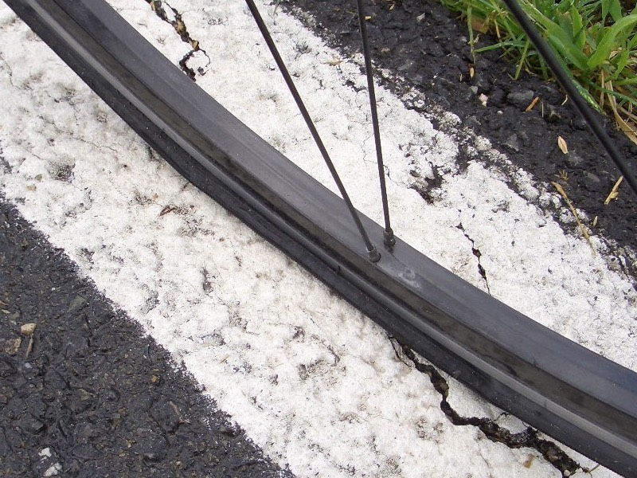

早上一醒來，就聽到滴滴答答的聲音，還以為是水龍頭沒鎖緊。
結果是外頭在下雨，看來已經連下了一個晚上，只是我睡得太熟沒有發現。
外頭雨勢渺茫，短時間之內絕對不會停。
收拾好東西之後，也不想跑來跑去了，就在旅館附設的餐廳（餐廳附設的旅館？）
裡頭用早餐，今天吃超好喝的熱巧克力，配上法國麵包和各種口味的果醬以及奶油。
吃了兩籃的法國麵包，才滿意的離開餐廳，早餐是5歐元。
吃完早餐之後，外頭的雨勢一點也沒有變小的跡象。
穿上了全套的雨衣，今天求天也沒有用了，準備當落湯雞吧。

從早上十點，一路苦命的騎車，騎到下午兩點，整整四個小時，都在雨中渡過。
一點都高興不起來，只好把iPod的音量調到最大，大聲的唱著歌，發洩心中的疲憊。
連續看了好幾天的小動物屍體橫躺在馬路上，都沒看到過半隻活的。
今天在雨中終於看到一隻棕毛的小兔子成功的橫渡馬路，繃繃跳跳的超可愛的說∼
沿著D925直直走，目標是迪耶普這個海邊的觀光城市。
雨下個不停，好擔心包包裡面的行李會不會跟著遭殃。
就這樣，下午兩點之後，天空總算出現一絲絲的光芒，苦難終於結束了嗎？
不，這是另一個苦難的開始，聽音樂的時候偶爾聽到『咻∼咻∼』的聲音。
覺得怪怪的，於是把iPod關掉，仔細聽聲音是從哪裡發出來的。
原來是FCR1的前輪被小玻璃給刺穿了一個小洞，咻咻的空氣聲就是這樣來的。
想說小小的洞應該沒關係吧，就這麼撐著騎，倒也還OK∼
好景不長，半小時後，前輪整個沒氣了，只好下車用牽的。
想說離迪耶普只剩下5公里，不如就這麼一路牽過去吧∼等到了旅館之後再慢慢的換內胎。
往前走了幾步，覺得好沒志氣，怎麼可以這樣就不騎了，所以在路邊坐了下來，開始換內胎。

這是第一次自己換車子的內胎，風火輪教我的，只剩下些微的印象....
有點手拙的也換好了內胎，開始打氣的時候，又聽到咻咻的聲音∼
不是吧！？才剛換而已，還沒開始騎耶？又爆胎了？
事實證明是爆胎的沒錯 T_T 因為外胎上面佈滿了許許多多的小玻璃碎片，不仔細看還不會發現。
才新換的內胎，又報銷了，再從頭來才一次吧∼
就這麼換了兩個內胎，花了將近一個小時才搞定！
想當初環島的時候，爆胎了就只好搭便車求救，一點自救的能力都沒有。
這次的行李雖然多了些，但該帶的都帶了，出了狀況也能補救，算是給自己的考驗吧∼
三點半，重新騎上FCR1，往迪耶普前進，順著山坡滑下去，看到了海邊，就看到了迪耶普了。
城鎮裡面滿是海鷗（信天翁？）飛舞，歐歐歐的叫個不停，相當壯觀。
果然有靠海城鎮的風範∼

也看到了會升起來的橋樑，當有船要進出的時候，橋樑就會升起。
其實跟台灣的平交道蠻像的，只是一次升起跟降下要花的時間頗長。
今天真的暴累的，一大早就淋著雨騎了四個多小時，然後又爆胎。
連換了兩個內胎才搞定，結果騎到迪耶普之後，是豔陽的好天氣呀！
雖然才下午四點，但是不想再騎了，找旅館休息吧∼
最重要的是包包裡的東西都沾上了溼氣，得快點拿出來晾乾。
連找了幾家旅館，價錢都好貴，大概因為是旅遊名地的關係吧。
居然有二星旅館一晚要價82歐元的，真是吃人不吐骨頭，看了價目表就吐血200CC。
找了老半天，只有一家要價58.55元的居然是最便宜，也罷，反正旅館貴自然有它的水準。
FCR1停在二樓的餐廳，今晚繼續睡大大的雙人床，豪華的個人衛浴，還有浴缸可以泡澡紓解疲勞。
把東西都拿出來晾乾。看來明天光是收拾又要費上好一番工夫。
唯一的鞋子也溼了，用超大量的衛生紙來吸收水分。
可是沒鞋子穿怎麼辦呢？我還沒吃晚餐呢∼要光著腳丫子出去晃嗎？
就這樣穿了藍白拖鞋出來吃晚餐∼ :) 台灣人獨有的，法國人想買還買不到呢。
在街上晃來晃去，今天一定要吃到我心中渴望已久的牛排呀！
果然找到了一家餐廳有賣牛排的，點了一份牛排+薯條，還有一杯啤酒。
小姐問我要大的嗎？是問我牛排的大小嗎？好呀∼越大越好！！
小姐用敬佩的眼神加上大拇指說『非常好∼！』
結果送來一杯超級大杯的啤酒 = =" 大概有一公升吧，喝的我都快醉了
超級美味的牛排，總算如願以償的吃到了，價錢還算OK，8.9歐元一份，相當台幣350左右。
我大概是豬轉世吧，接連吃了兩份牛排，那杯超大杯的啤酒，要價11歐元 >"< 真是貴呀
但是吃的好滿足呀∼晚餐28.8歐元。
回到旅館，打開iBook，發現有無線網路的訊號，只是異常的不穩定，斷斷續續的。
反正是偷用人家的，也沒什麼好挑剔的了∼
靠近窗戶邊信號比較強，就這樣一點一滴的把前三天已經寫好的遊記上傳。
看到留言版中滿滿的加油跟努力，好多的親戚朋友都出現了 :D 我會努力的。
今天花的錢雖然超出預算兩倍，就當作是淋雨騎車以及爆胎的彌補吧。
吃了美味的牛排，住在高級的旅館，穿著輕鬆的藍白拖，看著網路上的留言∼
今天是旅行的第八天，一切才剛開始而已。